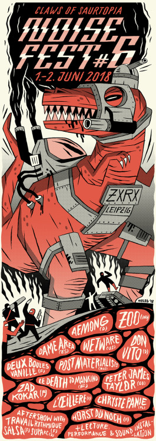

After a long, long break this is the shining resurgence of Claws Of Saurtopia—the infamous festival for noise, “music” and all things jurassic—taking place 1st and 2nd of June 2018!

FRIDAY, June 1
Chryste Panie (PL | Plaża Zachodnia)
NW (F | RoHS
Prod.)
Post-Materialists (RUS | Post-Materialization Music)
Don Vito (D | Tremor Panda Records)
Le Death To Mankind (F | Et Mon Cul C'est Du Tofu ?)
Aemong (TW/BR | Diskotopia)
Zad Kokar (F | Petite Nature)
Visuals by Señora
After show with:
Travail Rythmique
(F | Travail Rythmique)
supaKC x noisy answer (D | a friend in need)
SATURDAY, June 2
Noise lecture by Stop Asking Stupid Questions (RUS | Stauropygial)
Urge (F)
Horst Du Noch (F | retrofutur)
Peter James Taylor (UK | Fortissimo
Records)
Dame Area (ES | Màgia Roja)
Deux Boules Vanille (F | Kythibong)
WETWARE (USA | Dais Records)
ZOO (ID | Yes No Wave Music)
After show with:
Roland Moog
(F)
Salsa (F | MMODEMM)